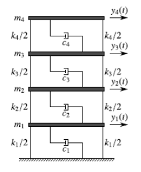

Operational Modal Analysis
Smart Civil Structures: L09
Feb 2026
Table of Contents
- Background Math/Theory
- System Identification
- Modal Analysis
- Operational Modal Analysis
- Frequency Decomposition Method
- Stochastic Subspace Identification
Background Math/Theory
Singular Value Decomposition (SVD)
SVD factorizes a real or complex matrix (\(m \times n\)) into orthnormal vectors and singular values:
\[ \underset{\scriptsize m\times n}{A}= \underset{\scriptsize m\times m}{U}\; \underset{\scriptsize m\times n}{\Sigma}\; \underset{\scriptsize n\times n}{V^{*}} \]
where
- \(U\): left singular vectors, orthonormal: \(U^* U = U U^* = I\)
- \(\Sigma\): diagonal matrix of singular values = diag[\(\sigma_1, \sigma_2, ...\)]
- \(V\): right singular vectors, orthonormal: \(V^* V = V V^* = I\).
SVD Example: a non-square matrix
\[\begin{align} \begin{bmatrix}2 & 0 & 1 & -1\\1 & 3 & 2 & 0\\4 & 1 & 0 & 2\end{bmatrix} &\approx \begin{bmatrix}0.315 & 0.0354 & 0.948\\0.503 & 0.841 & -0.198\\0.805 & -0.539 & -0.247\end{bmatrix} \begin{bmatrix}5.26 & 0 & 0 & 0\\0 & 3.11 & 0 & 0\\0 & 0 & 1.9 & 0\end{bmatrix} \\ &\quad \times \begin{bmatrix}0.827 & 0.439 & 0.251 & 0.246\\-0.4 & 0.638 & 0.552 & -0.358\\0.374 & -0.444 & 0.291 & -0.761\\-0.129 & -0.45 & 0.74 & 0.483\end{bmatrix}\\ &=\begin{bmatrix}2 & 6.29 \times 10^{-16} & 1 & -1\\1 & 3 & 2 & 1.06 \times 10^{-15}\\4 & 1 & 1.51 \times 10^{-15} & 2\end{bmatrix} \end{align} \]
SVD Example: a non-square matrix
\[ \mathbf{U}\mathbf{U}^T= \begin{bmatrix}1 & 1.41 \times 10^{-17} & 1.05 \times 10^{-16}\\1.41 \times 10^{-17} & 1 & 1.08 \times 10^{-16}\\1.05 \times 10^{-16} & 1.08 \times 10^{-16} & 1\end{bmatrix} \]
\[ \mathbf{V}\mathbf{V}^T= \begin{bmatrix}1 & 4.53 \times 10^{-16} & 1.43 \times 10^{-16} & 2.98 \times 10^{-16}\\4.53 \times 10^{-16} & 1 & 1.67 \times 10^{-16} & 1.43 \times 10^{-16}\\1.43 \times 10^{-16} & 1.67 \times 10^{-16} & 1 & -8.43 \times 10^{-17}\\2.98 \times 10^{-16} & 1.43 \times 10^{-16} & -8.43 \times 10^{-17} & 1\end{bmatrix} \]
SVD on a Symmetric Matrix
For a symmetric matrix \(A\), SVD has the same left and right singular vectors.
\[ \underset{\scriptsize m\times m}{A}= \underset{\scriptsize m\times m}{U}\; \underset{\scriptsize m\times m}{\Sigma}\; \underset{\scriptsize m\times m}{U^{*}} \]
where
- \(U\): singular vectors, orthonormal: \(U^* U = U U^* = I\)
- \(\Sigma\): diagonal matrix of singular values = diag[\(\sigma_1, \sigma_2, ...\)]
SVD on a Symmetric Matrix: Example
\[\begin{align} \begin{bmatrix}3 & 1 & 1\\1 & 3 & 0\\1 & 0 & 1\end{bmatrix} &\approx \begin{bmatrix}-0.739 & 0.521 & -0.427\\-0.632 & -0.756 & 0.172\\-0.233 & 0.397 & 0.888\end{bmatrix} \begin{bmatrix}4.17 & 0 & 0\\0 & 2.31 & 0\\0 & 0 & 0.519\end{bmatrix} \\ &\quad \times \begin{bmatrix}-0.739 & -0.632 & -0.233\\0.521 & -0.756 & 0.397\\-0.427 & 0.172 & 0.888\end{bmatrix} \\ &= \begin{bmatrix}3 & 1 & 1\\1 & 3 & 1.21 \times 10^{-16}\\1 & -2.78 \times 10^{-16} & 1\end{bmatrix} \end{align} \]
SVD on a Symmetric Matrix: Example
\[ \mathbf{U}\mathbf{U}^T= \begin{bmatrix}1 & 5.64\times 10^{-17} & -9.63\times 10^{-17}\\5.64\times 10^{-17} & 1 & 5.21\times 10^{-18}\\-9.63\times 10^{-17} & 5.21\times 10^{-18} & 1\end{bmatrix} \]
Eigenvalue Decomposition (1/4)
For a square matrix \(\mathbf{A}\in\mathbb{R}^{n\times n}\):
\[\mathbf{A}\mathbf{v}_i=\boldsymbol{\lambda_i}\mathbf{v}_i\]
where \(\mathbf{v}_i\) is the \(i\)-th eigenvector, and \(\mathbf{\lambda}_i\) is the \(i\)-th eigenvalue.
Eigenvalue Decomposition (2/4)
\[\mathbf{A}\mathbf{V}=\mathbf{V}\boldsymbol{\Lambda}\]
- \(\mathbf{V}=[\mathbf{v}_1,\dots,\mathbf{v}_n]\): eigenvectors
- \(\boldsymbol{\Lambda}=\mathrm{diag}(\lambda_1,\dots,\lambda_n)\): eigenvalues
If \(\mathbf{V}\) is invertible, i.e., with \(n\) distinct eigenvalues:
\[\mathbf{A}=\mathbf{V}\boldsymbol{\Lambda}\mathbf{V}^{-1}\]
Eigenvalue Decomposition (3/4)
Example matrix:
\[\mathbf{A}=\begin{bmatrix}3&1&0\\1&2&1\\0&1&1\end{bmatrix}\]
Eigenvalues (diagonal):
\[\boldsymbol{\Lambda}=\mathrm{diag}(3.732,\,2.000,\,0.268)\]
Eigenvectors (columns of \(\mathbf{V}\)):
\[\mathbf{V}=\begin{bmatrix}0.789&-0.577&0.211\\0.577&0.577&-0.577\\0.211&0.577&0.789\end{bmatrix}\]
Eigenvalue Decomposition (4/4)
\[\mathbf{A}\mathbf{V}=\begin{bmatrix}2.943&-1.155&0.057\\2.155&1.155&-0.155\\0.789&1.155&0.211\end{bmatrix},\;\;\mathbf{V}\boldsymbol{\Lambda}=\begin{bmatrix}2.943&-1.155&0.057\\2.155&1.155&-0.155\\0.789&1.155&0.211\end{bmatrix}\]
\[\mathbf{A}\mathbf{V} = \mathbf{V}\boldsymbol{\Lambda}\]
Since \(\mathbf{A}\) is symmetric, \(\mathbf{V}\) can be orthonormal., i.e., \(\mathbf{V}^T \mathbf{V}=I\).
Then, \(\mathbf{V}^{-1}=\mathbf{V}^T\) and
\[\mathbf{A} = \mathbf{V}\boldsymbol{\Lambda}\mathbf{V}^T\]
Taylor Series
For a smooth function \(f(x)\) expanded about \(x=a\):
\[ f(x)=\sum_{k=0}^{\infty}\frac{f^{(k)}(a)}{k!}(x-a)^k \]
Maclaurin series is the special case \(a=0\):
\[ f(x)=\sum_{k=0}^{\infty}\frac{f^{(k)}(0)}{k!}x^k \]
Taylor Series and Matrix Exponential
Taylor series (scalar): \[ e^{x}=\sum_{k=0}^{\infty}\frac{x^k}{k!} \]
Matrix exponential: \[ e^{\mathbf{A}t}=\sum_{k=0}^{\infty}\frac{(\mathbf{A}t)^k}{k!} \approx \sum_{k=0}^{N}\frac{(\mathbf{A}t)^k}{k!} \]
Taylor Series for \(e^{\mathbf{\Lambda}t}\)
Since \(\mathbf{\Lambda}=\mathrm{diag}(\lambda_1,\lambda_2,\ldots,\lambda_n)\):
\[ e^{\mathbf{\Lambda}t} =\sum_{k=0}^{\infty}\frac{(\mathbf{\Lambda}t)^k}{k!} \]
Because \(\mathbf{\Lambda}\) is diagonal, powers remain diagonal:
\[ (\mathbf{\Lambda}t)^k= \begin{bmatrix} (\lambda_1 t)^k & 0 & \cdots & 0\\ 0 & (\lambda_2 t)^k & \cdots & 0\\ \vdots & \vdots & \ddots & \vdots\\ 0 & 0 & \cdots & (\lambda_n t)^k \end{bmatrix} \]
Taylor Series for \(e^{\mathbf{\Lambda}t}\)
So the series decouples entry‑wise:
\[ \begin{align} e^{\mathbf{\Lambda}t} &= \begin{bmatrix} \sum_{k=0}^{\infty}\frac{(\lambda_1 t)^k}{k!} & 0 & \cdots & 0\\ 0 & \sum_{k=0}^{\infty}\frac{(\lambda_2 t)^k}{k!} & \cdots & 0\\ \vdots & \vdots & \ddots & \vdots\\ 0 & 0 & \cdots & \sum_{k=0}^{\infty}\frac{(\lambda_n t)^k}{k!} \end{bmatrix}\\ &= \begin{bmatrix} e^{\lambda_1 t} & 0 & \cdots & 0\\ 0 & e^{\lambda_2 t} & \cdots & 0\\ \vdots & \vdots & \ddots & \vdots\\ 0 & 0 & \cdots & e^{\lambda_n t} \end{bmatrix} \end{align} \]
Free Vibration of SDOF MCK System
\[ m\ddot{x}+c\dot{x}+kx=0 \]
Assume an exponential solution: \[ x(t)=e^{\lambda t} \]
Substitute into the ODE: \[ m\lambda^2+c\lambda+k=0 \]
Eigenvalue Structure (SDOF)
\[ \omega_n=\sqrt{\frac{k}{m}},\qquad \zeta=\frac{c}{2m\omega_n}=\frac{c}{2\sqrt{km}} \]
\[ \lambda^2+2\zeta\omega_n\lambda+\omega_n^2=0 \]
\[ \begin{align} \lambda &=\frac{-2\zeta\omega_n\pm\sqrt{(2\zeta\omega_n)^2-4\omega_n^2}}{2} \\ &=-\zeta\omega_n \pm j \omega_n\sqrt{1-\zeta^2} \end{align} \]
Eigenvalue Structure (SDOF)
Characteristic roots: \[ \lambda_{1,2}=-\zeta\omega_n \pm j\,\omega_d \]
So the free response is \[ \begin{align} x(t)&= C_1 e^{\lambda_{1} t} + C_2 e^{\lambda_{2} t} \\ &= C_1 e^{(-\zeta\omega_n + j\,\omega_d) t} + C_2 e^{(-\zeta\omega_n - j\,\omega_d) t}\\ &= e^{-\zeta\omega_n t}\left(C_1\cos\omega_d t + C_2\sin\omega_d t\right) \end{align} \]
State-Space Equation
The general form of a linear time-invariant (LTI) continuous-time state-space system is
\[ \begin{aligned} \dot{\mathbf{x}}(t) &= \mathbf{A}\,\mathbf{x}(t) + \mathbf{B}\,\mathbf{u}(t) \\ \mathbf{y}(t) &= \mathbf{C}\,\mathbf{x}(t) + \mathbf{D}\,\mathbf{u}(t) \end{aligned} \]
where \(\mathbf{x}(t)\) is the state vector, \(\mathbf{u}(t)\) is the input, \(\mathbf{y}(t)\) is the output, \(\mathbf{A}\), \(\mathbf{B}\), \(\mathbf{C}\), and \(\mathbf{D}\) are the system matrices.
State-Transition Equation
\[ \dot{\mathbf{x}}(t) = \mathbf{A}\,\mathbf{x}(t) + \mathbf{B}\,\mathbf{u}(t) \]
- The state vector \(\mathbf{x}(t)\) contains the minimum set of variables required to completely describe the system’s future behaviour.
- For structural dynamics systems, the state typically consists of displacement and velocity
System Matrix \(\mathbf{A}\) (1/3)
For the homogeneous state equation, \[ \dot{\mathbf{x}}(t)=\mathbf{A}\mathbf{x}(t), \]
the solution is \[ \mathbf{x}(t)=e^{\mathbf{A}t}\,\mathbf{x}(0), \]
so the evolution is fully determined by the state‑transition matrix \(e^{\mathbf{A}t}\)
System Matrix \(\mathbf{A}\) (2/3)
If \(\mathbf{A}=\mathbf{V}\mathbf{\Lambda}\mathbf{V}^{-1}\), then \[ (\mathbf{A}t)^k =(\mathbf{V}\mathbf{\Lambda}\mathbf{V}^{-1}t)^k =\mathbf{V}\mathbf{\Lambda}^k\mathbf{V}^{-1}t^k \]
\[ e^{\mathbf{A}t} =\sum_{k=0}^{\infty}\frac{(\mathbf{A}t)^k}{k!} =\mathbf{V}\left(\sum_{k=0}^{\infty}\frac{\mathbf{\Lambda}^k t^k}{k!}\right)\mathbf{V}^{-1} =\mathbf{V}e^{\mathbf{\Lambda}t}\mathbf{V}^{-1} \]
System Matrix \(\mathbf{A}\) (3/3)
\[ \begin{align} \mathbf{x}(t)&=\mathbf{V}e^{\mathbf{\Lambda}t}\mathbf{V}^{-1}\mathbf{x}(0) \\ &=\mathbf{V}\begin{bmatrix} e^{\lambda_1 t} & 0 & \cdots & 0\\ 0 & e^{\lambda_2 t} & \cdots & 0\\ \vdots & \vdots & \ddots & \vdots\\ 0 & 0 & \cdots & e^{\lambda_n t} \end{bmatrix}\mathbf{V}^{-1}\mathbf{x}(0) \end{align} \]
\[ \begin{align} \lambda_i &= -\zeta_i \omega_{n,i} \pm j\,\omega_{d,i} \\ \end{align} \]
Measurement Equation
\[ \mathbf{y}(t) = \mathbf{C}\,\mathbf{x}(t) + \mathbf{D}\,\mathbf{u}(t) \]
The output vector \(\mathbf{y}(t)\) represents what we can measure or observe from the system.
This may include: displacements (e.g. GNSS), velocities, accelerations (e.g. accelerometers)
SSE Example: a SDOF System
Consider a single-degree-of-freedom mass–spring–damper system governed by
\[ m\ddot{x}(t) + c\dot{x}(t) + kx(t) = f(t) \]
Define the state vector as
\[ \mathbf{x}(t) = \begin{bmatrix} x(t) \quad \dot{x}(t) \end{bmatrix}^T \]
Here, the state consists of displacement and velocity, which together fully describe the system dynamics.
State-Transition Equation
\[ \dot{\mathbf{x}}(t) = \begin{bmatrix} 0 & 1 \\ -\dfrac{k}{m} & -\dfrac{c}{m} \end{bmatrix} \mathbf{x}(t) + \begin{bmatrix} 0 \\ \dfrac{1}{m} \end{bmatrix} f(t). \]
This is the state-transition equation, describing how the system state evolves in time.
Measurement Equation
The output equation depends on what physical quantity is measured. If displacement is measured, the output equation is
\[ y(t) = \begin{bmatrix} 1 & 0 \end{bmatrix} \mathbf{x}(t). \]
If acceleration is measured,
\[ y(t)= \begin{bmatrix} -\dfrac{k}{m} & -\dfrac{c}{m} \end{bmatrix} \mathbf{x}(t) + \begin{bmatrix} \dfrac{1}{m} \end{bmatrix} f(t) \]
State-Space Equation: Why?
- SSE is the foundation for Time-domain Operational Modal Analysis Methods (SSI-cov, SSI-dat, etc) as well as Modern Control Theory
- SSE is straightforward to analysise and simulate in
MATLAB,Python scipy, etc.
SSE of NDOF MCK System
\[\mathbf{M}\ddot{\mathbf{x}}(t) + \mathbf{C}\dot{\mathbf{x}}(t) + \mathbf{K}\mathbf{x}(t) = \mathbf{f}(t)\]
Define the State Vector
\[\mathbf{z}(t) = \begin{bmatrix}\mathbf{x}(t) \ \dot{\mathbf{x}}(t)\end{bmatrix}\]
Then,
\[\dot{\mathbf{z}}(t) = \begin{bmatrix} \dot{\mathbf{x}}(t) \ \ddot{\mathbf{x}}(t) \end{bmatrix}\]
SSE of NDOF MCK System
\[\dot{\mathbf{z}} = \underbrace{\begin{bmatrix} \mathbf{0} & \mathbf{I} \\ \mathbf{M}^{-1}(-\mathbf{K}) & \mathbf{M}^{-1}(-\mathbf{C}) \end{bmatrix}}_{\mathbf{A}} \mathbf{z} + \underbrace{\begin{bmatrix} \mathbf{0} \\ \mathbf{M}^{-1} \end{bmatrix}}_{\mathbf{B}} \mathbf{f}(t)\]
\[ \mathbf{y}= \underbrace{\begin{bmatrix} -\mathbf{M}^{-1}\mathbf{K} & -\mathbf{M}^{-1}\mathbf{C} \end{bmatrix}}_{\mathbf{C}} \mathbf{z} + \underbrace{\mathbf{M}^{-1}}_{\mathbf{D}} \mathbf{f}(t) \]
Discrete State-Space Equation (SSE)
Continuous-time: \[\dot{\mathbf{x}}(t)=\mathbf{A}\mathbf{x}(t)+\mathbf{B}\mathbf{u}(t),\quad \mathbf{y}(t)=\mathbf{C}\mathbf{x}(t)+\mathbf{D}\mathbf{u}(t)\]
Discrete-time (sampling period \(T_s\)): \[\mathbf{x}_{k+1}=\mathbf{A}_d\mathbf{x}_k+\mathbf{B}_d\mathbf{u}_k,\quad \mathbf{y}_k=\mathbf{C}_d\mathbf{x}_k+\mathbf{D}_d\mathbf{u}_k\]
Where:
\(\mathbf{x}_k=\mathbf{x}(kT_s)\), \(\mathbf{A}_d=e^{\mathbf{A}T_s}\), \(\mathbf{B}_d=\int_0^{T_s} e^{\mathbf{A}\tau}\mathbf{B}\,d\tau\), and Often \(\mathbf{C}_d=\mathbf{C}\), \(\mathbf{D}_d=\mathbf{D}\)
Modal Parameters from \(\mathbf{A}\) and \(\mathbf{C}\)
Given the continuous-time state matrix \(\mathbf{A}\):
Eigen-decomposition \[\mathbf{A}\mathbf{v}_i=\lambda_i\mathbf{v}_i, \quad \lambda_i = -\zeta_i\omega_{n,i} \pm j\,\omega_{d,i}\]
Natural frequency and damping
\[\omega_{n,i}= |\lambda_i|,\quad \zeta_i=-\frac{\text{Re}(\lambda_i)}{\omega_{n,i}}, \quad f_{n,i}=\frac{\omega_{n,i}}{2\pi}\]
Modal Parameters from \(\mathbf{A}\) and \(\mathbf{C}\)
- Mode shapes from output matrix If \(\mathbf{y}=\mathbf{C}\mathbf{x}\) and \(\mathbf{V}=[\mathbf{v}_1,\dots,\mathbf{v}_r]\), \[\boldsymbol{\Phi}=\mathbf{C}\mathbf{V}\] Each column of \(\boldsymbol{\Phi}\) is a (possibly complex) mode shape.
Modal Parameters from \(\mathbf{A}_d\) and \(\mathbf{C}_d\)
\(\mathbf{A}=\mathbf{V}\mathbf{\Lambda}\mathbf{V}^{-1}\), then
\[ \begin{align} \mathbf{A}_d &= e^{\mathbf{A}T_s} =\sum_{k=0}^{\infty}\frac{(\mathbf{A}T_s)^k}{k!} =\mathbf{V}\left(\sum_{k=0}^{\infty}\frac{\mathbf{\Lambda}^k T_s^k}{k!}\right)\mathbf{V}^{-1}\\ &=\mathbf{V}\begin{bmatrix} e^{\lambda_1 t} & 0 & \cdots & 0\\ 0 & e^{\lambda_2 t} & \cdots & 0\\ \vdots & \vdots & \ddots & \vdots\\ 0 & 0 & \cdots & e^{\lambda_n t} \end{bmatrix}\mathbf{V}^{-1} =\mathbf{V}\mathbf{M}\mathbf{V}^{-1} \end{align} \]
\[ \mu_i = e^{\lambda_i} T_s, \lambda_i = \ln(\mu_i)/T_s \]
Modal Parameters from \(\mathbf{A}_d\) and \(\mathbf{C}_d\)
Given the discrete-time state matrix \(\mathbf{A}_d\) (sampling period \(T_s\)):
- Eigen-decomposition on \(\mathbf{A}_d\)
\[\mathbf{A}_d\mathbf{v}_i=\mu_i\mathbf{v}_i, \quad \lambda_i=\frac{\ln(\mu_i)}{T_s}\]
- Use the formulae for the continous \(\mathbf{\lambda}_i\)
Cross Spectral Density
Power Spectral Density \(P_{yy}(f)\) vs Cross Spectral Density \(P_{xy}(f)\)
\[ \begin{align} P_{yy}(f) &= \lim_{T\to\infty} \frac{1}{T}\,Y(f)Y(f)^* = \lim_{T\to\infty} \frac{1}{T}\,|Y(f)|^2 \\ P_{xy}(f) &= \lim_{T\to\infty} \frac{1}{T}\,X(f)Y(f)^* \end{align} \]
System Identification Concept

Experimental Modal Analysis

\[ Y(\omega) = H(\omega) X(\omega) \to H(\omega) = Y(\omega)/X(\omega) \]
Operational Modal Analysis
Excitation on Civil Infrastructure?? The Output-only version.
- Frequency Domain Decomposition (FDD)
- Stochastic Subspace Identification (SSI)
- Covariance Driven (SSI-cov)
- Data Driven (SSI-dat)
Frequency Domain Decomposition
\[Y(j\omega) = H(j\omega) X(j\omega)\]
\[ G_{xx}(j\omega) = E\{X(j\omega) X(j\omega)^{H}\} \]
\[ G_{YY}(j\omega) = E\{Y(j\omega) Y(j\omega)^{H}\} \]
Frequency Domain Decomposition
\[ \begin{align} G_{yy}(j\omega) &= E\{Y(j\omega) Y(j\omega)^{H}\} \\ &= E\{H(j\omega) X(j\omega) (H(j\omega) X(j\omega))^{H}\} \\ &= E\{H(j\omega) X(j\omega) X(j\omega)^{H} H(j\omega)^{H}\} \\ &= H(j\omega) G_{xx}(j\omega) H(j\omega)^{H} \end{align}\tag{1} \]
Frequency Domain Decomposition
If the input is white noise (constant PSD \(G_{xx}(j\omega)=C\)), \(G_{yy}(j\omega)\) around the \(k\)-th natural frequency will be dominated by the corresponding mode,
\[ \begin{align} G_{yy}(j\omega) &\approx \frac{d_k \phi_k \phi_k^{*}}{- \operatorname{Re}{(\lambda_k)}} = c_k \phi_k \phi_k^{*} \tag{10} \end{align} \]
where \(c_k\) is a constant and \(\phi_k\) is the \(k\)-th mode-shape.
Frequency Domain Decomposition
\[ \begin{align} \mathbf{G}_{yy}(j\omega_k) &\approx c_k \phi_k \phi_k^{*} \end{align} \]
By Singular Value Decomposition on \(\mathbf{G}_{yy}(j\omega_k)\) at the peak frequency \(\omega_k\),
\[ \begin{aligned} \mathbf{G}_{yy}(j\omega_k) &= U\,\Sigma\,U^{*} \\ &= [u_1\;u_2\;\cdots]\, \mathrm{diag}(\sigma_1,\sigma_2,\ldots)\, [u_1\;u_2\;\cdots]^{*} \\ &\approx \sigma_1\,u_1\,u_1^{*} \end{aligned} \]
Stochastic Subspace Identification
Discrete-time stochastic state-space equations:
\[\mathbf{x}_{k+1}=\mathbf{A}\mathbf{x}_k+\mathbf{w}_k\] \[\mathbf{y}_k=\mathbf{C}\mathbf{x}_k+\mathbf{v}_k\]
with zero-mean white noises \(\mathbf{w}_k,\mathbf{v}_k\).
OMA Algorithms
| Method | Strengths | Limitations | Typical use |
|---|---|---|---|
| FDD | Simple, fast | Frequency resolution exists, no-damping estimation | Quick OMA screening |
| SSI‑cov | Robust for long stationary data | Assumes stationarity; needs long records | Ambient vibration with long data |
| SSI‑dat | Good for short data | Higher memory; sensitive to noise | Short or mildly non‑stationary data |
OMA Demo Using OoMA Toolbox1
4-DOF Shear Building

Equation of Motion
\[ \begin{align} \ddot{y_1}(t)&=\frac{1}{m_{1}}\left(-k_{1}y_{1}-c_{1}\dot{y_{1}}+k_{2}(y_{2}-y_{1})+c_{2}(\dot{y_{2}}-\dot{y_{1}})\right)\\ \ddot{y_2}(t)&=\frac{1}{m_{2}}\left(k_{2}(y_{1}-y_{2})+c_{2}(\dot{y_{1}}-\dot{y_{2}})+k_{3}(y_{3}-y_{2})+c_{3}(\dot{y_{3}}-\dot{y_{2}})\right)\\ \ddot{y_3}(t)&=\frac{1}{m_{3}}\left(k_{3}(y_{2}-y_{3})+c_{3}(\dot{y_{2}}-\dot{y_{3}})+k_{4}(y_{4}-y_{3})+c_{4}(\dot{y_{4}}-\dot{y_{3}})\right)\\ \ddot{y_4}(t)&=\frac{1}{m_{4}}\left(k_{4}(y_{3}-y_{4})+c_{4}(\dot{y_{3}}-\dot{y_{4}})\right) \end{align} \]
4DOF M-C-K Equation
\[ \mathbf{M}\ddot{\mathbf{y}}+\mathbf{C}\dot{\mathbf{y}}+\mathbf{K}\mathbf{y}=\mathbf{0} \]
where \(\mathbf{y}=[y_1; y_2; y_3; y_4]^T\)
\[ \mathbf{M}=\begin{bmatrix}m_1&0&0&0\\0&m_2&0&0\\0&0&m_3&0\\0&0&0&m_4\end{bmatrix},\quad \mathbf{C}=\begin{bmatrix}c_1+c_2&-c_2&0&0\\-c_2&c_2+c_3&-c_3&0\\0&-c_3&c_3+c_4&-c_4\\0&0&-c_4&c_4\end{bmatrix},\\ \mathbf{K}=\begin{bmatrix}k_1+k_2&-k_2&0&0\\-k_2&k_2+k_3&-k_3&0\\0&-k_3&k_3+k_4&-k_4\\0&0&-k_4&k_4\end{bmatrix} \]
SSE of n-DOF M-C-K System
The continuous‑time model is
\[\dot{\mathbf{z}}=\mathbf{A_c}\mathbf{z}+\mathbf{B_c}\mathbf{f}(t),\] \[\mathbf{y}=\mathbf{C_c}\mathbf{z}+\mathbf{D_c}\mathbf{f}(t),\]
where
\[\mathbf{A_c}=\begin{bmatrix}\mathbf{0}&\mathbf{I}\\ -\mathbf{M}^{-1}\mathbf{K}&-\mathbf{M}^{-1}\mathbf{C}\end{bmatrix}, \qquad \mathbf{B_c}=\begin{bmatrix}\mathbf{0}\\ \mathbf{M}^{-1}\end{bmatrix}.\]
\[\mathbf{C_c}=\begin{bmatrix}-\mathbf{M}^{-1}\mathbf{K}&-\mathbf{M}^{-1}\mathbf{C}\end{bmatrix}, \qquad \mathbf{D_c}=\mathbf{M}^{-1}.\]
Discretising a Continous SSE model
- Calcaulting Ad, Bd, Cd, and Dd
% In MATLAB, given continuous system A,B,C,D and sampling time Ts
sysc = ss(A,B,C,D); % continuous system
sysd = c2d(sysc, Ts, 'zoh'); % zero‑order hold (default), or 'tustin', 'foh', 'matched'.
Ad = sysd.A; Bd = sysd.B;
Cd = sysd.C; Dd = sysd.D;
% Or explicit ZOH formulars:
Ad = expm(A*Ts);
Bd = A\(Ad - eye(size(A)))*B; % valid if A is invertible
Cd = C;
Dd = D;How to simulate in MATLAB
- Discrete state-update (Manual)
How to simulate in MATLAB
- Use MATLAB state-space simulation
The OMA_DEMO.mlx
Roving Test
When you want to measure more points than the number of accelerometers you have
The idea is you divide your acc sensors into two groups:
- Reference sensors: placed at fixed points
- Roving sensors: moves around multiple points
The mode shapes from multiple roving tests are stitched together using information from the reference sensors
A Suspension Bridge in UK


Roving Test
- 20 sensors (14 ref + 6 rovers), 4 setups, each 30 min long


Mode VS1

Mode VA1

Mode VS2

Mode SV1

Mode SV2

Mode VA2

Mode T1

Mode L1

Mode L2

Mode L3